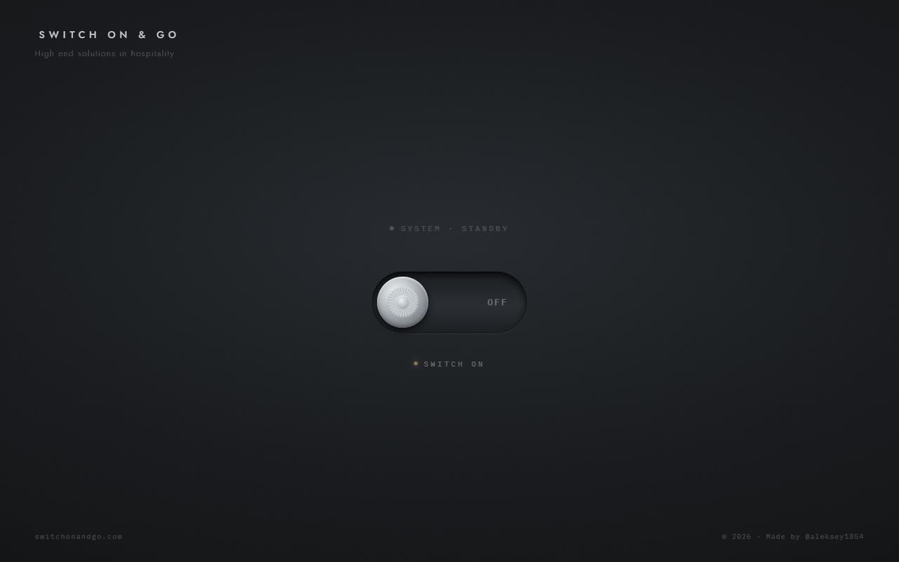

Web designer and developer from Pavlodar. Below are ten things I built. Most of them run on this page, so you can use them instead of reading about them.
One-page site for a hospitality consultant, 2026
She sent voice notes with one request: the site should be a switch. Everything else grew from that. It is three hundred lines in one file, with no images.
Built with HTML, CSS, JavaScript
Live not yet: the domain still shows the registrar page
